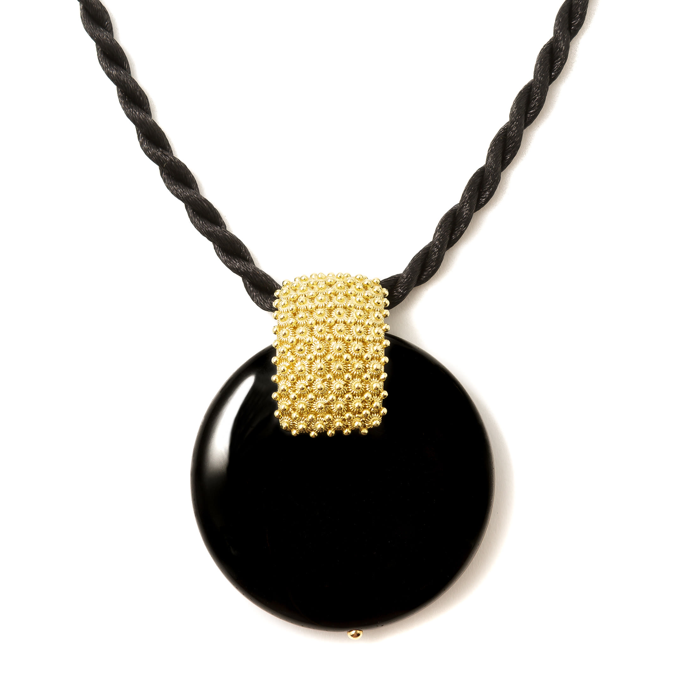
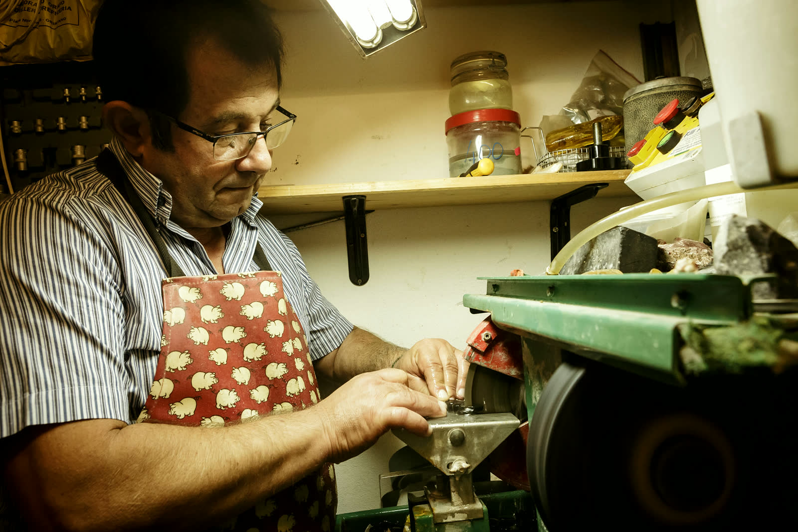
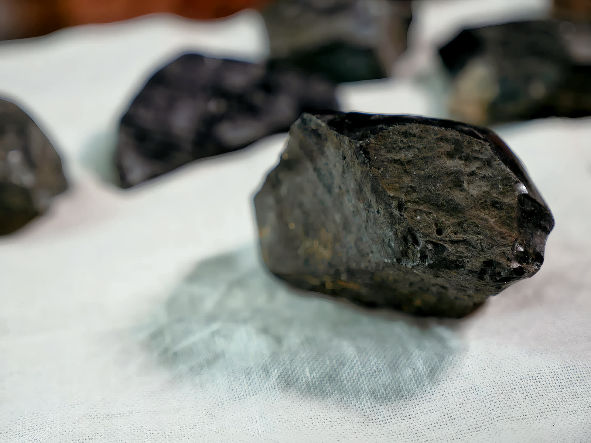
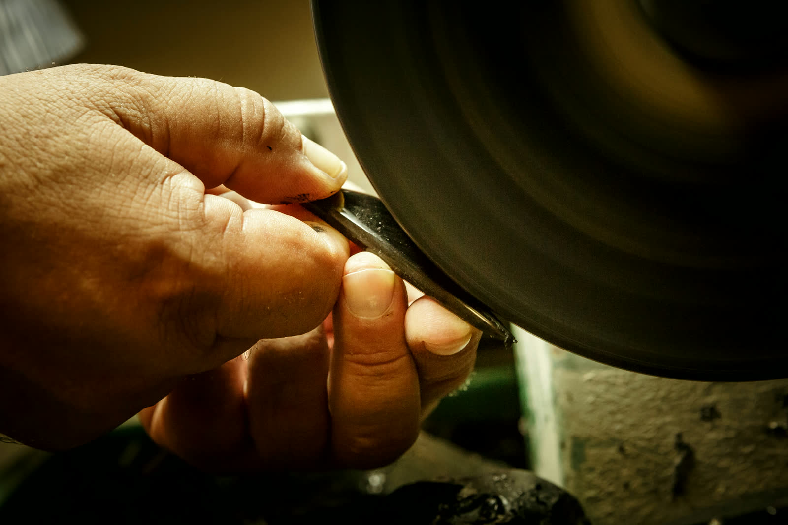
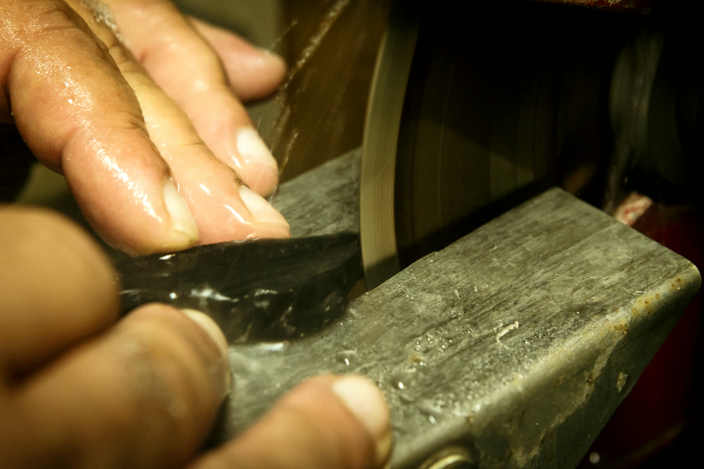
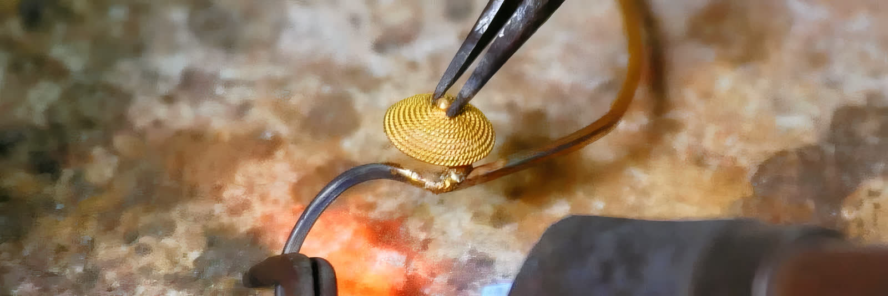
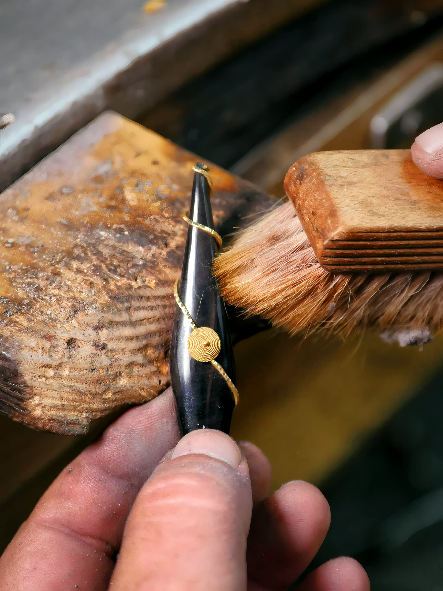
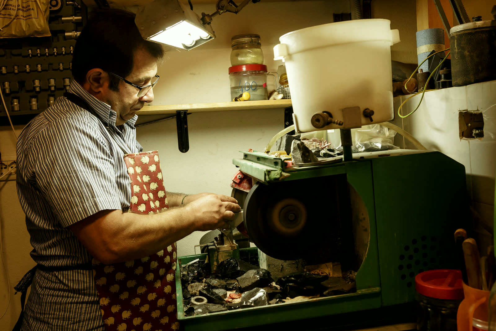

Oristano · Sardegna
Peppino Mele
Laboratorio orafo, specializzato nella lavorazione dell'ossidiana
Da oltre trent'anni, nel centro di Oristano, scheggia, taglia e monta l'ossidiana in oro e pietre preziose.

L'artigiano
«Il mio laboratorio, oreficeria con una lunga storia, si trova nel centro di Oristano ed è specializzata nella lavorazione dell'ossidiana, un minerale a base di silice con struttura amorfa, estremamente elegante.»
Dopo un periodo di apprendistato a bottega presso un orafo filigranista di Cagliari, apre il proprio laboratorio. L'incontro con l'ossidiana avviene in modo quasi casuale, e deriva dalla sua attitudine a realizzare gioielli personalizzati in stretta relazione con il cliente.
Da oltre trent'anni lavora l'ossidiana, il corallo e altre pietre, di cui esalta la naturale bellezza con montature in oro e argento. Con le sue collezioni partecipa alle manifestazioni fieristiche regionali.
«L'ossidiana ha una storia antica e affascinante. Essa veniva scolpita anche dagli antichi Egizi per realizzare scarabei e sigilli e dai Romani per ricavarne delle coppe finemente intarsiate.»

La lavorazione
Le sue parole: «Nel mio laboratorio scheggio, taglio e monto l'ossidiana in oro e pietre preziose per ottenere monili unici quali ciondoli, orecchini, anelli e centrali in abbinamento a pietre dure e coralli.»

L'ossidiana grezza
Pietra vitrea vulcanica, di arcaico utilizzo in Sardegna.

Scheggia
«Scheggio, taglio e monto»: la prima delle tre operazioni che nomina.

Taglia
La lastra contro la guida di metallo, bagnata dall'acqua.

Monta
La filigrana sarda in oro e argento, che tiene la pietra.

Finisce
Il pennello sul pezzo montato, con la pietra e l'oro insieme.
I pezzi
Dove si trova
- IndirizzoPiazza Mariano — Oristano
- Telefono335 8478921
- Emailpeppino.mele@libero.it
- OrariDal lunedì al sabato
9.00 – 13.00 · 16.00 – 19.00
